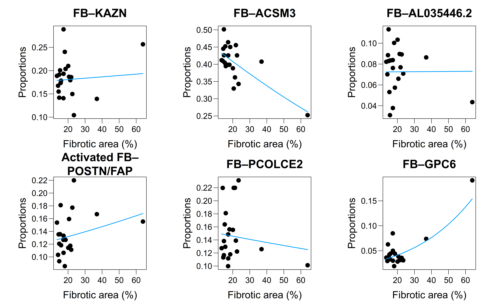
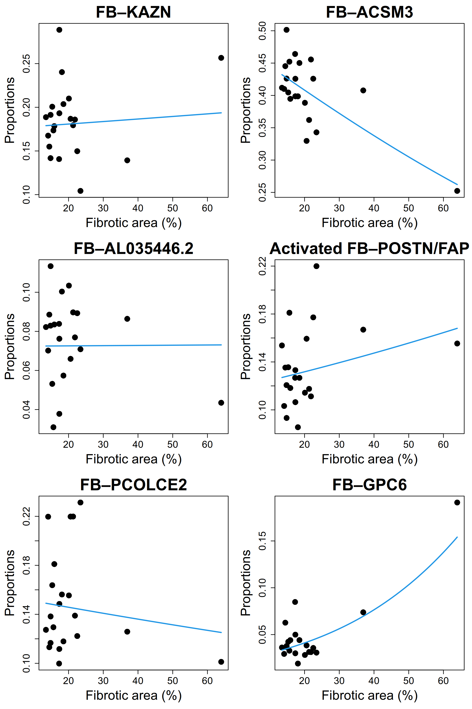
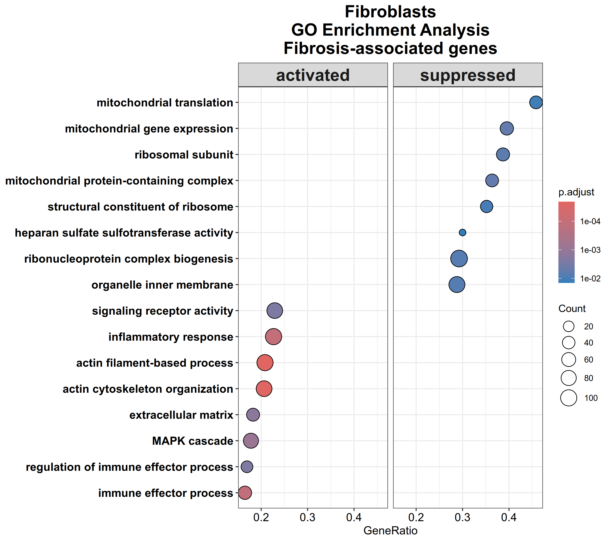
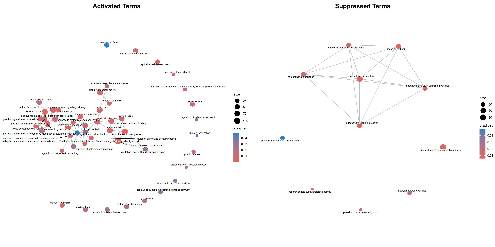
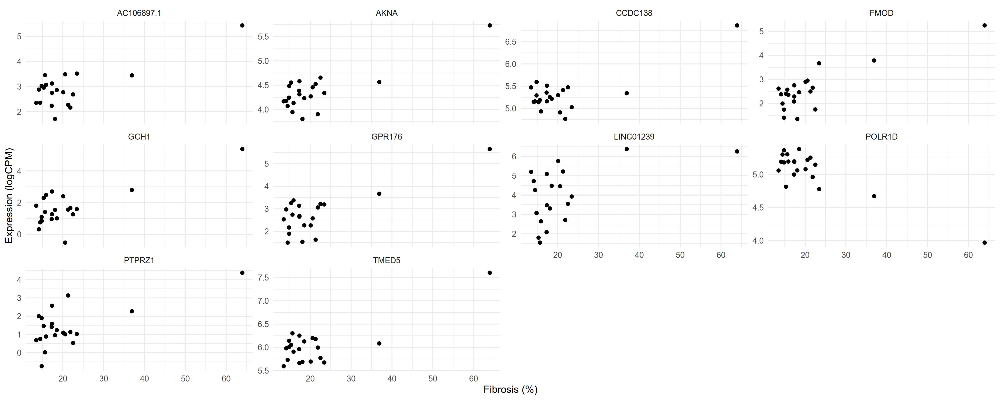
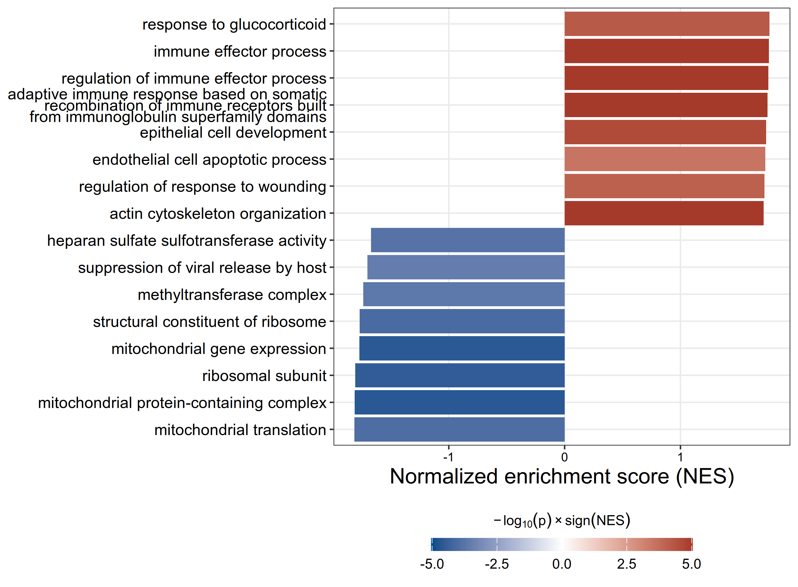
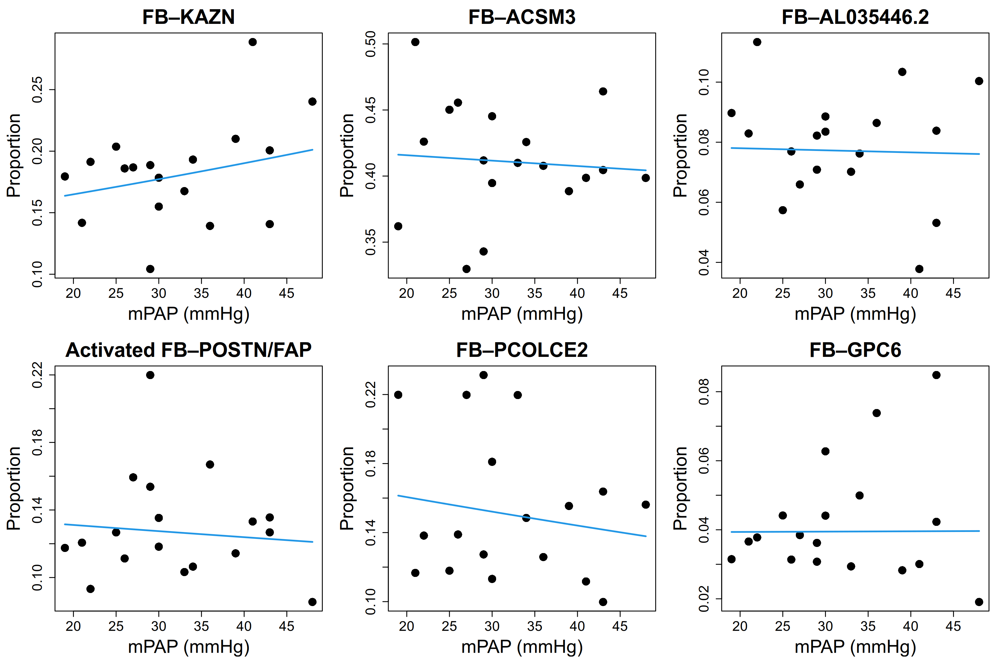
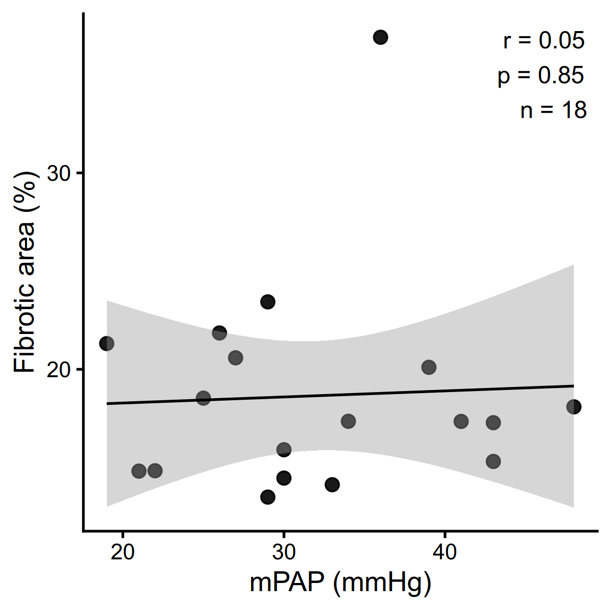

Last updated: 2026-11-18
Checks: 7 0
Knit directory: project/
This reproducible R Markdown analysis was created with workflowr (version 1.7.2). The Checks tab describes the reproducibility checks that were applied when the results were created. The Past versions tab lists the development history.
Great! Since the R Markdown file has been committed to the Git repository, you know the exact version of the code that produced these results.
Great job! The global environment was empty. Objects defined in the global environment can affect the analysis in your R Markdown file in unknown ways. For reproduciblity it’s best to always run the code in an empty environment.
The command set.seed(20240606) was run prior to running
the code in the R Markdown file. Setting a seed ensures that any results
that rely on randomness, e.g. subsampling or permutations, are
reproducible.
Great job! Recording the operating system, R version, and package versions is critical for reproducibility.
Nice! There were no cached chunks for this analysis, so you can be confident that you successfully produced the results during this run.
Great job! Using relative paths to the files within your workflowr project makes it easier to run your code on other machines.
Great! You are using Git for version control. Tracking code development and connecting the code version to the results is critical for reproducibility.
The results in this page were generated with repository version d4b8eb1. See the Past versions tab to see a history of the changes made to the R Markdown and HTML files.
Note that you need to be careful to ensure that all relevant files for
the analysis have been committed to Git prior to generating the results
(you can use wflow_publish or
wflow_git_commit). workflowr only checks the R Markdown
file, but you know if there are other scripts or data files that it
depends on. Below is the status of the Git repository when the results
were generated:
Ignored files:
Ignored: logs/
Untracked files:
Untracked: data/Baza_dla_Gino_AP.xlsx
Untracked: data/Baza_dla_Gino_AP_2.xlsx
Untracked: data/Baza_dla_Gino_AP_short.xlsx
Untracked: data/Cellbender_output
Untracked: data/Cellranger_output
Untracked: data/DCM_Clinical_data_22.xlsx
Untracked: data/DCM_Clinical_data_26.xlsx
Untracked: data/DCM_Clinical_data_30.xlsx
Untracked: data/DCM_Clinical_data_30_261012.xlsx
Untracked: data/DCM_Clinical_data_83.xlsx
Untracked: data/HMEC_RNAseq
Untracked: data/Heart_datasets
Untracked: data/Heart_specific_proteome.xlsx
Untracked: data/Homo_sapiens.GRCh38.93.gtf
Untracked: data/Human_plasma_proteome.xlsx
Untracked: data/Mass_spec
Untracked: data/Massons_quantification.xlsx
Untracked: data/OLINK
Untracked: data/OLINK_LVAD
Untracked: data/Published_datasets
Untracked: data/Raw
Untracked: data/SSc-PAH
Untracked: data/gencode.v46.chr_patch_hapl_scaff.annotation.gtf
Untracked: data/gencode.v46.chr_patch_hapl_scaff.basic.annotation.gtf
Untracked: data/processed/CM/activities.qs2
Untracked: data/processed/CM/annotated.qs2
Untracked: data/processed/CM/baseline.qs2
Untracked: data/processed/EC/activities.qs2
Untracked: data/processed/EC/annotated.qs2
Untracked: data/processed/EC/baseline.qs2
Untracked: data/processed/FB/activities.qs2
Untracked: data/processed/FB/annotated.qs2
Untracked: data/processed/FB/baseline.qs2
Untracked: data/processed/LC/PC10.qs2
Untracked: data/processed/LC/PC20.qs2
Untracked: data/processed/LC/PC30.qs2
Untracked: data/processed/LC/activities.qs2
Untracked: data/processed/LC/annotated.qs2
Untracked: data/processed/LC/baseline.qs2
Untracked: data/processed/MC/activities.qs2
Untracked: data/processed/MC/annotated.qs2
Untracked: data/processed/MC/baseline.qs2
Untracked: data/processed/MP/PC10.qs2
Untracked: data/processed/MP/PC20.qs2
Untracked: data/processed/MP/PC30.qs2
Untracked: data/processed/MP/activities.qs2
Untracked: data/processed/MP/annotated.qs2
Untracked: data/processed/MP/baseline.qs2
Untracked: data/processed/MultinicheNet.qs2
Untracked: data/processed/QC/annotated.qs2
Untracked: data/processed/QC/annotated_RNA.qs2
Untracked: data/processed/QC/doublet_metadata.csv
Untracked: data/processed/QC/final_integrated.qs2
Untracked: data/processed/QC/initial_integrated.qs2
Untracked: data/processed/QC/not_integrated.qs2
Untracked: data/processed/QC/preQC.qs2
Untracked: data/processed/RNA_quality_control.qs2
Untracked: data/processed/RV_cell_states_RNA.qs2
Untracked: data/processed/SoupX/A_SoupX_input_CZD13.qs2
Untracked: data/processed/SoupX/A_SoupX_input_CZD15.qs2
Untracked: data/processed/SoupX/A_SoupX_input_CZD16.qs2
Untracked: data/processed/SoupX/A_SoupX_input_CZD4.qs2
Untracked: data/processed/SoupX/A_SoupX_input_CZD5.qs2
Untracked: data/processed/SoupX/A_SoupX_input_CZD6.qs2
Untracked: data/processed/SoupX/A_SoupX_input_CZD7.qs2
Untracked: data/processed/SoupX/A_SoupX_input_CZD9.qs2
Untracked: data/processed/SoupX/A_SoupX_input_P3.qs2
Untracked: data/processed/SoupX/A_SoupX_input_P5.qs2
Untracked: data/processed/SoupX/A_SoupX_input_P8.qs2
Untracked: data/processed/SoupX/A_SoupX_input_PK153.qs2
Untracked: data/processed/SoupX/A_SoupX_input_PK213.qs2
Untracked: data/processed/SoupX/A_SoupX_input_PK229.qs2
Untracked: data/processed/SoupX/A_SoupX_input_PK323.qs2
Untracked: data/processed/SoupX/A_SoupX_input_PK337.qs2
Untracked: data/processed/SoupX/A_SoupX_input_PK345.qs2
Untracked: data/processed/SoupX/A_SoupX_input_PK357.qs2
Untracked: data/processed/SoupX/A_SoupX_input_PK369.qs2
Untracked: data/processed/SoupX/A_SoupX_input_PK375.qs2
Untracked: data/processed/SoupX/A_SoupX_input_PK385.qs2
Untracked: data/processed/SoupX/A_SoupX_input_PK401.qs2
Untracked: data/processed/SoupX/A_SoupX_input_PK403.qs2
Untracked: data/processed/SoupX/A_SoupX_input_PK415.qs2
Untracked: data/processed/SoupX/A_SoupX_input_PK437.qs2
Untracked: data/processed/SoupX/A_SoupX_input_PK439.qs2
Untracked: data/processed/SoupX/A_SoupX_input_PK441.qs2
Untracked: data/processed/SoupX/A_SoupX_input_PK461.qs2
Untracked: data/processed/SoupX/A_SoupX_input_PK463.qs2
Untracked: data/processed/SoupX/A_fresh_ambient_profile_CZD13.qs2
Untracked: data/processed/SoupX/A_fresh_ambient_profile_CZD15.qs2
Untracked: data/processed/SoupX/A_fresh_ambient_profile_CZD16.qs2
Untracked: data/processed/SoupX/A_fresh_ambient_profile_CZD4.qs2
Untracked: data/processed/SoupX/A_fresh_ambient_profile_CZD5.qs2
Untracked: data/processed/SoupX/A_fresh_ambient_profile_CZD6.qs2
Untracked: data/processed/SoupX/A_fresh_ambient_profile_CZD7.qs2
Untracked: data/processed/SoupX/A_fresh_ambient_profile_CZD9.qs2
Untracked: data/processed/SoupX/A_fresh_ambient_profile_P3.qs2
Untracked: data/processed/SoupX/A_fresh_ambient_profile_P5.qs2
Untracked: data/processed/SoupX/A_fresh_ambient_profile_P8.qs2
Untracked: data/processed/SoupX/A_fresh_ambient_profile_PK153.qs2
Untracked: data/processed/SoupX/A_fresh_ambient_profile_PK213.qs2
Untracked: data/processed/SoupX/A_fresh_ambient_profile_PK229.qs2
Untracked: data/processed/SoupX/A_fresh_ambient_profile_PK323.qs2
Untracked: data/processed/SoupX/A_fresh_ambient_profile_PK337.qs2
Untracked: data/processed/SoupX/A_fresh_ambient_profile_PK345.qs2
Untracked: data/processed/SoupX/A_fresh_ambient_profile_PK357.qs2
Untracked: data/processed/SoupX/A_fresh_ambient_profile_PK369.qs2
Untracked: data/processed/SoupX/A_fresh_ambient_profile_PK375.qs2
Untracked: data/processed/SoupX/A_fresh_ambient_profile_PK385.qs2
Untracked: data/processed/SoupX/A_fresh_ambient_profile_PK401.qs2
Untracked: data/processed/SoupX/A_fresh_ambient_profile_PK403.qs2
Untracked: data/processed/SoupX/A_fresh_ambient_profile_PK415.qs2
Untracked: data/processed/SoupX/A_fresh_ambient_profile_PK437.qs2
Untracked: data/processed/SoupX/A_fresh_ambient_profile_PK439.qs2
Untracked: data/processed/SoupX/A_fresh_ambient_profile_PK441.qs2
Untracked: data/processed/SoupX/A_fresh_ambient_profile_PK461.qs2
Untracked: data/processed/SoupX/A_fresh_ambient_profile_PK463.qs2
Untracked: data/processed/mPAP/CM_GSEA_Reactome_mPAP.rds
Untracked: data/processed/mPAP/CM_ORA_REACTOME_mPAP_down.rds
Untracked: data/processed/mPAP/CM_ORA_REACTOME_mPAP_up.rds
Untracked: data/processed/mPAP/CM_activities.qs2
Untracked: data/processed/resources/A_activity_API_compatibility.json
Untracked: data/processed/resources/A_activity_network_manifest.json
Untracked: data/processed/resources/A_final_resource_manifest.json
Untracked: data/processed/resources/A_ligand_target_matrix_nsga2r_final.rds
Untracked: data/processed/resources/A_resources_sessionInfo.txt
Untracked: data/processed/resources/A_submitted_programme_provenance.json
Untracked: data/refdata-gex-GRCh38-2020-A
Untracked: omnipathr-log/
Untracked: output/Ambient_RNA_correction/
Untracked: output/Cardiomyocytes_cell_states/
Untracked: output/Cell_communication/
Untracked: output/Cell_state_annotation/
Untracked: output/Clinical_transcriptomic_associations/
Untracked: output/DCM_control_transcriptomics/
Untracked: output/Datasets/
Untracked: output/Endothelial_cells_cell_states/
Untracked: output/Fibroblasts_cell_states/
Untracked: output/Fibrosis_associations/
Untracked: output/Integrative_analysis/
Untracked: output/Lymphocytes_cell_states/
Untracked: output/Macrophages_cell_states/
Untracked: output/Mural_cells_cell_states/
Untracked: output/Protein_differential_abundance/
Untracked: output/Protein_quality_control/
Untracked: output/Pulmonary_pressure_associations/
Untracked: output/QC_integration/
Untracked: output/Supplementary_datasets/
Untracked: output/Transcriptional_signatures/
Untracked: output/Transcriptomic_variation/
Unstaged changes:
Deleted: output/README.md
Note that any generated files, e.g. HTML, png, CSS, etc., are not included in this status report because it is ok for generated content to have uncommitted changes.
These are the previous versions of the repository in which changes were
made to the R Markdown (analysis/Fibrosis_associations.Rmd)
and HTML (docs/Fibrosis_associations.html) files. If you’ve
configured a remote Git repository (see ?wflow_git_remote),
click on the hyperlinks in the table below to view the files as they
were in that past version.
| File | Version | Author | Date | Message |
|---|---|---|---|---|
| Rmd | d4b8eb1 | GinoBonazza | 2026-11-18 | Document assay-specific age covariates in donor metadata |
| html | d4b8eb1 | GinoBonazza | 2026-11-18 | Document assay-specific age covariates in donor metadata |
| Rmd | 0ab82a3 | GinoBonazza | 2026-11-18 | Include RNA processing and sequencing batches in EV1 |
| html | 0ab82a3 | GinoBonazza | 2026-11-18 | Include RNA processing and sequencing batches in EV1 |
| Rmd | cda4263 | GinoBonazza | 2026-11-18 | Align signature membership exports with the tested cell types |
| html | cda4263 | GinoBonazza | 2026-11-18 | Align signature membership exports with the tested cell types |
| Rmd | 78001e3 | GinoBonazza | 2026-11-18 | Refine compact programme panel labels |
| html | 78001e3 | GinoBonazza | 2026-11-18 | Refine compact programme panel labels |
| Rmd | 9a47f63 | GinoBonazza | 2026-11-18 | Add HC-inclusive analysis scripts and frozen reproducibility inputs |
| html | 9a47f63 | GinoBonazza | 2026-11-18 | Add HC-inclusive analysis scripts and frozen reproducibility inputs |
| Rmd | d136073 | GinoBonazza | 2026-10-19 | MXRA5 coexpression analysis |
| html | d136073 | GinoBonazza | 2026-10-19 | MXRA5 coexpression analysis |
knitr::opts_chunk$set(warning = FALSE, message = FALSE, error = FALSE, cache = FALSE, echo = TRUE, dpi = 300, fig.retina = 1,
fig.align = "center", dev = "png", dev.args = list(type = "cairo", family = "Arial"))
library(here)here() starts at /scratch/gbonaz/A_publication_20261118/projectcurrent_file <- "Fibrosis_associations"
output_dir_data <- here::here("output", current_file)
output_dir_figs <- here::here("docs", "figure", paste0(current_file, ".Rmd"))
dir.create(output_dir_data, recursive = TRUE, showWarnings = FALSE)
dir.create(output_dir_figs, recursive = TRUE, showWarnings = FALSE)
dir.create(here::here("output", "Datasets"), recursive = TRUE, showWarnings = FALSE)
knitr::opts_chunk$set(fig.path = paste0(output_dir_figs, "/"))
set.seed(20240606)library(dplyr)
library(tidyr)
library(tibble)
library(ggplot2)
library(readxl)
library(readr)
library(patchwork)
library(scales)
library(Seurat)
library(Matrix)
library(speckle)
library(limma)
library(edgeR)
library(EnhancedVolcano)
library(ComplexHeatmap)
library(reactable)
library(cowplot)
library(qs2)
library(clusterProfiler)
library(org.Hs.eg.db)
library(enrichplot)
library(stringr)
select <- dplyr::select
filter <- dplyr::filter
BiocParallel::register(BiocParallel::SerialParam())
theme_set(theme_classic(base_family = "Arial"))DCM_RV <- qs2::qs_read(here::here("data", "processed", "RV_cell_states_RNA.qs2"), nthreads = 2)
DCM_RV <- subset(DCM_RV, subset = Group == "DCM")
DefaultAssay(DCM_RV) <- "RNA"Fibrosis_data <- read_excel(here::here("data", "Massons_quantification.xlsx"))
colnames(Fibrosis_data)[3] <- "Fibrosis_percent"
Fibrosis_data <- Fibrosis_data %>% dplyr::filter(Sample %in% unique(DCM_RV$Sample))
add_metadata <- left_join(DCM_RV[["Sample"]], dplyr::select(Fibrosis_data, c("Sample", "Fibrosis_percent")))
row.names(add_metadata) <- row.names(DCM_RV[[]])
DCM_RV <- AddMetaData(DCM_RV, metadata = add_metadata)
rm(add_metadata)
FB <- subset(DCM_RV, cell_type == "Fibroblasts")
FB$cell_state <- factor(FB$cell_state, levels = unique(FB$cell_state))metadata <- DCM_RV@meta.data %>% dplyr::select(Sample, Group, Age_years, Fibrosis_percent) %>% unique()
metadata$Fibrosis_percent <- metadata$Fibrosis_percent * 100
metadata_DCM <- dplyr::filter(metadata, Group == "DCM", !is.na(Fibrosis_percent), !is.na(Age_years))
differential_abundance <- data.frame()
props <- getTransformedProps(DCM_RV$cell_type, DCM_RV$Sample, transform = "logit")
props$Counts <- props$Counts[, metadata_DCM$Sample, drop = FALSE]
props$TransformedProps <- props$TransformedProps[, metadata_DCM$Sample, drop = FALSE]
props$Proportions <- props$Proportions[, metadata_DCM$Sample, drop = FALSE]
metadata_DCM <- metadata_DCM %>% dplyr::slice(match(colnames(props$Proportions), Sample))
stopifnot(all(metadata_DCM$Sample == colnames(props$Proportions)))
design <- model.matrix(~metadata_DCM[["Fibrosis_percent"]] + metadata_DCM[["Age_years"]])
fit <- lmFit(props$TransformedProps, design)
fit <- eBayes(fit, robust = TRUE)
differential_abundance <- topTable(fit, n = Inf, coef = 2)
differential_abundance$cell_state <- rownames(differential_abundance)
rm(props, fit)
write.csv(differential_abundance, file = here::here(output_dir_data, "Differential_Abundance_Fibrosis_all.csv"),
quote = F, row.names = F)
reactable(differential_abundance, filterable = TRUE, searchable = TRUE, showPageSizeOptions = TRUE)stopifnot(all(metadata_DCM$Group == "DCM"), !anyDuplicated(metadata_DCM$Sample))
write.csv(metadata_DCM, file.path(output_dir_data, "A_clinical_donor_metadata.csv"), row.names = FALSE)differential_abundance <- data.frame()
props <- getTransformedProps(FB$cell_state, FB$Sample, transform = "logit")
props$Counts <- props$Counts[, metadata_DCM$Sample, drop = FALSE]
props$TransformedProps <- props$TransformedProps[, metadata_DCM$Sample, drop = FALSE]
props$Proportions <- props$Proportions[, metadata_DCM$Sample, drop = FALSE]
metadata_DCM <- metadata_DCM %>% dplyr::slice(match(colnames(props$Proportions), Sample))
stopifnot(all(metadata_DCM$Sample == colnames(props$Proportions)))
design <- model.matrix(~metadata_DCM[["Fibrosis_percent"]] + metadata_DCM[["Age_years"]])
fit <- lmFit(props$TransformedProps, design)
fit <- eBayes(fit, robust = TRUE)
differential_abundance <- topTable(fit, n = Inf, coef = 2)
differential_abundance$cell_state <- rownames(differential_abundance)
differential_abundance_fibrosis_fb <- differential_abundance
metadata_DCM <- metadata_DCM %>% dplyr::slice(match(colnames(props$Proportions), Sample))
par(mfrow = c(2, 3), mar = c(3.5, 4.4, 2.8, 0.6), pty = "s", family = "Arial", cex = 1, mgp = c(2.8, 0.65, 0))
x <- metadata_DCM$Fibrosis_percent
age0 <- mean(metadata_DCM$Age_years, na.rm = TRUE)
xseq <- seq(min(x), max(x), length.out = 100)
for (i in seq_len(nrow(props$Proportions))) {
title <- rownames(props$Proportions)[i]
if (grepl("Activated", title))
title <- "Activated FB–\nPOSTN/FAP"
plot(x, props$Proportions[i, ], main = title, pch = 16, cex = 1.3, ylab = "Proportions", xlab = "", cex.lab = 1.3,
cex.axis = 1.05, cex.main = 1.5, las = 1)
eta <- fit$coefficients[i, 1] + fit$coefficients[i, 2] * xseq + fit$coefficients[i, 3] * age0
lines(xseq, plogis(eta), col = "#00A0FF", lwd = 2)
mtext("Fibrotic area (%)", side = 1, line = 2.3, cex = 1.3)
}
fig.path you set was
ignored by workflowr.
write.csv(differential_abundance, file = here::here(output_dir_data, "Differential_Abundance_Fibrosis_fb.csv"),
quote = F, row.names = F)
reactable(differential_abundance, filterable = TRUE, searchable = TRUE, showPageSizeOptions = TRUE)par(mfrow = c(3, 2), mar = c(5, 5, 3, 1))
x <- metadata_DCM$Fibrosis_percent
age0 <- mean(metadata_DCM$Age_years, na.rm = TRUE)
for (i in seq_len(nrow(props$Proportions))) {
y <- props$Proportions[i, ]
plot(x, y, main = rownames(props$Proportions)[i], pch = 16, cex = 2, ylab = "Proportions", xlab = "Fibrotic area (%)",
cex.lab = 2, cex.axis = 1.5, cex.main = 2.5)
xseq <- seq(min(x, na.rm = TRUE), max(x, na.rm = TRUE), length.out = 100)
eta <- fit$coefficients[i, 1] + fit$coefficients[i, 2] * xseq + fit$coefficients[i, 3] * age0
lines(xseq, plogis(eta), col = 4, lwd = 2)
}
fig.path you set was
ignored by workflowr.
DefaultAssay(FB) <- "RNA"
data <- subset(FB, Group == "DCM")
expr_matrix <- GetAssayData(object = data, assay = "RNA", slot = "counts")
non_zero_cells <- rowSums(expr_matrix > 0)
total_cells <- ncol(expr_matrix)
percent_cells <- (non_zero_cells/total_cells) * 100
percent_stats <- data.frame(gene = rownames(expr_matrix), percentCells = percent_cells)
keep_genes <- rownames(dplyr::filter(percent_stats, percentCells > 1))
data <- data[which(rownames(data) %in% keep_genes), ]
rm(keep_genes, non_zero_cells, expr_matrix, total_cells, percent_cells)
pseudocounts <- Seurat2PB(data, sample = "Sample", cluster = "cell_type")
colnames(pseudocounts) <- pseudocounts$samples$sample
metadata_DCM <- metadata_DCM %>% dplyr::filter(Sample %in% pseudocounts$samples$sample)
pseudocounts <- pseudocounts[, match(metadata_DCM$Sample, pseudocounts$samples$sample)]
stopifnot(all(metadata_DCM$Sample == pseudocounts$samples$sample))
keep_samples <- pseudocounts$samples$lib.size > 50000
pseudocounts <- pseudocounts[, keep_samples]
metadata_DCM <- metadata_DCM %>% dplyr::slice(match(pseudocounts$samples$sample, Sample))
stopifnot(all(metadata_DCM$Sample == pseudocounts$samples$sample))
keep_genes <- filterByExpr(pseudocounts)
pseudocounts <- pseudocounts[keep_genes, ]
rm(keep_samples, keep_genes, data)
pseudocounts <- normLibSizes(pseudocounts)
design <- model.matrix(~metadata_DCM[["Fibrosis_percent"]] + metadata_DCM[["Age_years"]])
design[, 2] <- rescale(design[, 2])
pseudocounts <- estimateDisp(pseudocounts, design, robust = TRUE)
fit <- glmQLFit(pseudocounts, design, robust = TRUE)
fit <- glmQLFTest(fit, coef = 2)
results_DE_fibrosis <- topTags(fit, n = Inf)$table
results_DE_fibrosis <- merge(results_DE_fibrosis, percent_stats[, c("gene", "percentCells")], by = "gene", all.x = FALSE)
results_DE_fibrosis$up_down <- ifelse(results_DE_fibrosis$logFC > 0 & results_DE_fibrosis$FDR < 0.05, "Increased",
ifelse(results_DE_fibrosis$logFC < 0 & results_DE_fibrosis$FDR < 0.05, "Decreased", "Not significant"))
signif_DE_fibrosis <- results_DE_fibrosis %>% dplyr::filter(FDR < 0.05) %>% dplyr::arrange(FDR)
results_DE_fibrosis_all <- results_DE_fibrosisreorder_GO_by_pvalue <- function(enrichGO_result) {
go_results <- enrichGO_result@result
go_results_sorted <- go_results[order(go_results$p.adjust), ]
enrichGO_result@result <- go_results_sorted
return(enrichGO_result)
}classify_terms <- function(df) {
df$sign <- ifelse(df$NES > 0, "activated", "suppressed")
return(df)
}results_DE_fibrosis$metric <- results_DE_fibrosis$logFC * -log10(results_DE_fibrosis$PValue)
entrezid <- bitr(results_DE_fibrosis$gene, fromType = "SYMBOL", toType = "ENTREZID", OrgDb = "org.Hs.eg.db", drop = TRUE)
results_DE_fibrosis <- merge(results_DE_fibrosis, entrezid, by.x = "gene", by.y = "SYMBOL")
results_DE_fibrosis <- results_DE_fibrosis[!duplicated(results_DE_fibrosis$metric), ]
genelist <- results_DE_fibrosis$metric
names(genelist) <- results_DE_fibrosis$ENTREZID
genelist <- genelist[order(genelist, decreasing = T)]
checkpoint <- here::here("data", "processed", "Fibrosis_GSEA.rds")
if (file.exists(checkpoint)) {
GSEA_fibrosis <- readRDS(checkpoint)
stopifnot(isTRUE(all.equal(GSEA_fibrosis@geneList, genelist, tolerance = 1e-12)))
} else {
GSEA_fibrosis <- gseGO(geneList = genelist, OrgDb = org.Hs.eg.db, ont = "ALL", keyType = "ENTREZID", nPermSimple = 10000,
minGSSize = 10, eps = 0)
}
GSEA_fibrosis <- reorder_GO_by_pvalue(GSEA_fibrosis)
saveRDS(GSEA_fibrosis, here::here(output_dir_data, "GSEA_GO_Fibrosis.rds"))GSEA_simplified <- clusterProfiler::simplify(GSEA_fibrosis, cutoff = 0.6, by = "p.adjust", select_fun = min, measure = "Wang",
semData = NULL)
GSEA_simplified <- reorder_GO_by_pvalue(GSEA_simplified)
dotplot(GSEA_simplified, showCategory = 8, split = ".sign", title = paste0("Fibroblasts", "\nGO Enrichment Analysis",
"\nFibrosis-associated genes"), label_format = 50, font.size = 12) + theme(plot.title = element_text(face = "bold",
size = 18, hjust = 0.5, family = "Arial"), axis.text.y = element_text(face = "bold", family = "Arial"), strip.text = element_text(face = "bold",
size = 18, family = "Arial")) + facet_grid(. ~ .sign)
fig.path you set was
ignored by workflowr.
GSEA_simplified@result <- classify_terms(GSEA_simplified@result)
activated_terms <- subset(GSEA_simplified@result, sign == "activated")
suppressed_terms <- subset(GSEA_simplified@result, sign == "suppressed")
GSEA_activated <- GSEA_simplified
GSEA_activated@result <- activated_terms
GSEA_activated <- pairwise_termsim(GSEA_activated)
GSEA_suppressed <- GSEA_simplified
GSEA_suppressed@result <- suppressed_terms
GSEA_suppressed <- pairwise_termsim(GSEA_suppressed)
p1 <- emapplot(GSEA_activated, showCategory = 100, node_label_size = 2.5, min_edge = 0.15) + ggtitle("Activated Terms") +
theme(plot.title = element_text(face = "bold", size = 18, hjust = 0.5, family = "Arial"))
p2 <- emapplot(GSEA_suppressed, showCategory = 100, node_label_size = 2.5, min_edge = 0.15) + ggtitle("Suppressed Terms") +
theme(plot.title = element_text(face = "bold", size = 18, hjust = 0.5, family = "Arial"))
expand_range <- function(r) {
d <- diff(r)
if (d < 1e-08)
d <- max(abs(r), 1)
r + c(-1, 1) * d * 0.15
}
p1 <- p1 + coord_cartesian(xlim = expand_range(range(p1$data$x)), ylim = expand_range(range(p1$data$y)), clip = "off") +
theme(aspect.ratio = NULL)
p2 <- p2 + coord_cartesian(xlim = expand_range(range(p2$data$x)), ylim = expand_range(range(p2$data$y)), clip = "off") +
theme(aspect.ratio = NULL)
combined_plot <- p1 | p2
print(combined_plot)
fig.path you set was
ignored by workflowr.
rm(GSEA_simplified, activated_terms, suppressed_terms, GSEA_activated, GSEA_suppressed, p1, p2)top10_genes <- signif_DE_fibrosis %>% dplyr::arrange(FDR) %>% dplyr::slice_head(n = 10) %>% dplyr::pull(gene)
counts <- edgeR::cpm(pseudocounts, log = TRUE)
df_plot <- as.data.frame(t(counts[top10_genes, , drop = FALSE])) %>% tibble::rownames_to_column("Sample") %>% dplyr::mutate(Fibrosis = metadata_DCM$Fibrosis_percent[match(Sample,
metadata_DCM$Sample)]) %>% tidyr::pivot_longer(cols = dplyr::all_of(top10_genes), names_to = "gene", values_to = "expr")
ggplot(df_plot, aes(x = Fibrosis, y = expr)) + geom_point() + facet_wrap(~gene, scales = "free_y") + theme_minimal(base_family = "Arial") +
labs(x = "Fibrosis (%)", y = "Expression (logCPM)")
fig.path you set was
ignored by workflowr.
top_n_pos <- 8
top_n_neg <- 8
padj_cutoff <- 0.05
library(dplyr)
library(tibble)
library(ggplot2)
library(stringr)
library(scales)
wrap_3lines <- function(x, width = 45) {
vapply(x, function(s) {
s <- str_squish(as.character(s))
if (nchar(s) <= width)
return(s)
words <- str_split(s, "\\s+")[[1]]
if (length(words) <= 1)
return(s)
lines <- c("", "", "")
li <- 1
for (w in words) {
cand <- if (lines[li] == "")
w
else paste(lines[li], w)
if (nchar(cand) <= width) {
lines[li] <- cand
}
else if (li < 3) {
li <- li + 1
lines[li] <- w
}
else {
lines[li] <- paste0(substr(lines[li], 1, max(1, width - 1)), "…")
break
}
}
if (nchar(lines[3]) > width) {
lines[3] <- paste0(substr(lines[3], 1, width - 1), "…")
}
paste(lines[lines != ""], collapse = "\n")
}, FUN.VALUE = character(1))
}
obj <- GSEA_fibrosis
if (is.null(obj) || nrow(obj@result) == 0) {
message("GSEA_fibrosis is empty.")
} else {
obj_simpl <- clusterProfiler::simplify(obj, cutoff = 0.6, by = "p.adjust", select_fun = min, measure = "Wang",
semData = NULL)
res <- obj_simpl@result %>% as_tibble() %>% filter(!is.na(NES), !is.na(p.adjust)) %>% filter(p.adjust < padj_cutoff)
if (nrow(res) == 0) {
message("No significant terms (p.adjust < ", padj_cutoff, ") found.")
}
else {
pos <- res %>% filter(NES > 0) %>% arrange(desc(NES)) %>% slice_head(n = top_n_pos)
neg <- res %>% filter(NES < 0) %>% arrange(NES) %>% slice_head(n = top_n_neg)
df_gsea <- bind_rows(pos, neg) %>% mutate(p_for_color = if ("pvalue" %in% colnames(.))
pvalue
else p.adjust, score = -log10(p_for_color) * sign(NES), Description_wrapped = wrap_3lines(Description,
width = 41))
L <- unname(quantile(abs(df_gsea$score), probs = 0.8, na.rm = TRUE))
if (!is.finite(L) || L == 0)
L <- max(abs(df_gsea$score), na.rm = TRUE)
ggplot(df_gsea, aes(x = reorder(Description_wrapped, NES), y = NES, fill = score)) + geom_col(width = 0.9) +
coord_flip() + scale_fill_gradient2(low = "#004C8C", mid = "white", high = "#A63A2A", midpoint = 0,
limits = c(-L, L), oob = scales::squish, name = expression(-log[10](p) %*% sign(NES))) + labs(x = NULL,
y = "Normalized enrichment score (NES)") + theme_bw(base_size = 10, base_family = "Arial") + theme(text = element_text(color = "black",
family = "Arial"), axis.text = element_text(color = "black", family = "Arial"), axis.title = element_text(color = "black",
size = 14, family = "Arial"), axis.text.y = element_text(size = 10.2, color = "black", lineheight = 0.6,
family = "Arial"), plot.title = element_blank(), panel.grid.minor = element_blank(), legend.position = "bottom",
legend.direction = "horizontal", legend.title = element_text(size = 9, family = "Arial"), legend.text = element_text(size = 9,
family = "Arial")) + guides(fill = guide_colorbar(barwidth = unit(6, "cm"), barheight = unit(0.3,
"cm"), title.position = "top", title.hjust = 0.5))
}
}
fig.path you set was
ignored by workflowr.
metadata_mpap <- FB@meta.data %>% dplyr::select(Sample, Group, Age_years, mPAP_mmHg) %>% unique()
metadata_DCM_mpap <- metadata_mpap %>% dplyr::filter(Group == "DCM", !is.na(mPAP_mmHg), mPAP_mmHg > 0, !is.na(Age_years))
props_mpap <- getTransformedProps(FB$cell_state, FB$Sample, transform = "logit")
props_mpap$Counts <- props_mpap$Counts[, metadata_DCM_mpap$Sample, drop = FALSE]
props_mpap$TransformedProps <- props_mpap$TransformedProps[, metadata_DCM_mpap$Sample, drop = FALSE]
props_mpap$Proportions <- props_mpap$Proportions[, metadata_DCM_mpap$Sample, drop = FALSE]
metadata_DCM_mpap <- metadata_DCM_mpap %>% dplyr::slice(match(colnames(props_mpap$Proportions), Sample))
stopifnot(all(metadata_DCM_mpap$Sample == colnames(props_mpap$Proportions)))
design_mpap <- model.matrix(~metadata_DCM_mpap[["mPAP_mmHg"]] + metadata_DCM_mpap[["Age_years"]])
fit_mpap <- limma::lmFit(props_mpap$TransformedProps, design_mpap)
fit_mpap <- limma::eBayes(fit_mpap, robust = TRUE)
differential_abundance_mpap_fb <- limma::topTable(fit_mpap, n = Inf, coef = 2)
differential_abundance_mpap_fb$cell_state <- rownames(differential_abundance_mpap_fb)
write.csv(differential_abundance_mpap_fb, file = here::here(output_dir_data, "Differential_Abundance_mPAP_fb.csv"),
quote = FALSE, row.names = FALSE)
n_states <- nrow(props_mpap$Proportions)
par(mfrow = c(2, 3), mar = c(5, 5, 3, 1))
x <- metadata_DCM_mpap$mPAP_mmHg
age0 <- mean(metadata_DCM_mpap$Age_years, na.rm = TRUE)
for (i in seq_len(n_states)) {
y <- props_mpap$Proportions[i, ]
plot(x, y, main = rownames(props_mpap$Proportions)[i], pch = 16, cex = 2, ylab = "Proportion", xlab = "mPAP (mmHg)",
cex.lab = 2, cex.axis = 1.5, cex.main = 2.2)
xseq <- seq(min(x, na.rm = TRUE), max(x, na.rm = TRUE), length.out = 100)
eta <- fit_mpap$coefficients[i, 1] + fit_mpap$coefficients[i, 2] * xseq + fit_mpap$coefficients[i, 3] * age0
lines(xseq, plogis(eta), col = 4, lwd = 2)
}
fig.path you set was
ignored by workflowr.
reactable(differential_abundance_mpap_fb, filterable = TRUE, searchable = TRUE, showPageSizeOptions = TRUE)rm(props_mpap, fit_mpap)mpap_fibrosis_df <- DCM_RV@meta.data %>% dplyr::select(Sample, Group, Age_years, mPAP_mmHg, Fibrosis_percent) %>%
dplyr::distinct() %>% dplyr::filter(Group == "DCM", !is.na(mPAP_mmHg), mPAP_mmHg > 0, !is.na(Fibrosis_percent)) %>%
dplyr::mutate(Fibrosis_percent = Fibrosis_percent * 100)
cor_test_mpap_fibrosis <- cor.test(mpap_fibrosis_df$mPAP_mmHg, mpap_fibrosis_df$Fibrosis_percent, method = "pearson")
r_val <- round(unname(cor_test_mpap_fibrosis$estimate), 2)
p_val <- signif(cor_test_mpap_fibrosis$p.value, 2)
ggplot(mpap_fibrosis_df, aes(x = mPAP_mmHg, y = Fibrosis_percent)) + geom_point(size = 2.6, alpha = 0.9) + geom_smooth(method = "lm",
se = TRUE, linewidth = 0.6, color = "black") + annotate("text", x = Inf, y = Inf, label = paste0("r = ", r_val,
"\np = ", p_val, "\nn = ", nrow(mpap_fibrosis_df)), hjust = 1.15, vjust = 1.2, size = 4, family = "Arial") +
labs(x = "mPAP (mmHg)", y = "Fibrotic area (%)") + theme_classic(base_size = 13, base_family = "Arial") + theme(axis.text = element_text(color = "black",
family = "Arial"), axis.title = element_text(color = "black", family = "Arial"))
fig.path you set was
ignored by workflowr.
fibrosis_values_supp <- Fibrosis_data %>% dplyr::select(Sample, Fibrosis_percent) %>% dplyr::mutate(Fibrosis_percent = Fibrosis_percent *
100)
writexl::write_xlsx(list(Fibrosis_values = fibrosis_values_supp, FB_fibrosis_abundance = differential_abundance_fibrosis_fb,
Fibrosis_DE = results_DE_fibrosis_all, Fibrosis_GSEA_GO = GSEA_fibrosis@result, FB_mPAP_abundance = differential_abundance_mpap_fb),
here::here("output", "Datasets", "Dataset_EV7.xlsx"))
sessionInfo()R version 4.5.2 (2025-10-31)
Platform: x86_64-pc-linux-gnu
Running under: Ubuntu 24.04.3 LTS
Matrix products: default
BLAS: /usr/lib/x86_64-linux-gnu/openblas-pthread/libblas.so.3
LAPACK: /usr/lib/x86_64-linux-gnu/openblas-pthread/libopenblasp-r0.3.26.so; LAPACK version 3.12.0
locale:
[1] LC_CTYPE=en_US.UTF-8 LC_NUMERIC=C
[3] LC_TIME=en_US.UTF-8 LC_COLLATE=en_US.UTF-8
[5] LC_MONETARY=en_US.UTF-8 LC_MESSAGES=en_US.UTF-8
[7] LC_PAPER=en_US.UTF-8 LC_NAME=C
[9] LC_ADDRESS=C LC_TELEPHONE=C
[11] LC_MEASUREMENT=en_US.UTF-8 LC_IDENTIFICATION=C
time zone: Etc/UTC
tzcode source: system (glibc)
attached base packages:
[1] stats4 grid stats graphics grDevices utils datasets
[8] methods base
other attached packages:
[1] stringr_1.6.0 enrichplot_1.30.4 org.Hs.eg.db_3.22.0
[4] AnnotationDbi_1.72.0 IRanges_2.44.0 S4Vectors_0.48.0
[7] Biobase_2.70.0 BiocGenerics_0.56.0 generics_0.1.4
[10] clusterProfiler_4.18.2 qs2_0.1.7 cowplot_1.2.0
[13] reactable_0.4.5 ComplexHeatmap_2.26.0 EnhancedVolcano_1.29.1
[16] ggrepel_0.9.6 edgeR_4.8.0 limma_3.66.0
[19] speckle_1.10.0 Matrix_1.6-5 SeuratObject_5.0.2
[22] Seurat_4.4.0 scales_1.4.0 patchwork_1.3.2
[25] readr_2.1.6 readxl_1.4.5 ggplot2_4.0.1
[28] tibble_3.3.0 tidyr_1.3.2 dplyr_1.2.1
[31] here_1.0.2
loaded via a namespace (and not attached):
[1] fs_2.1.0 matrixStats_1.5.0
[3] spatstat.sparse_3.1-0 httr_1.4.7
[5] RColorBrewer_1.1-3 doParallel_1.0.17
[7] tools_4.5.2 sctransform_0.4.2
[9] R6_2.6.1 mgcv_1.9-3
[11] lazyeval_0.2.2 uwot_0.2.4
[13] GetoptLong_1.1.0 withr_3.0.2
[15] sp_2.2-0 gridExtra_2.3
[17] progressr_0.18.0 cli_3.6.6
[19] spatstat.explore_3.6-0 scatterpie_0.2.6
[21] labeling_0.4.3 sass_0.4.10
[23] S7_0.2.1 spatstat.data_3.1-9
[25] ggridges_0.5.7 pbapply_1.7-4
[27] systemfonts_1.3.1 yulab.utils_0.2.2
[29] gson_0.1.0 DOSE_4.4.0
[31] R.utils_2.13.0 parallelly_1.45.1
[33] RSQLite_2.4.5 gridGraphics_0.5-1
[35] shape_1.4.6.1 crosstalk_1.2.2
[37] ica_1.0-3 spatstat.random_3.4-3
[39] GO.db_3.22.0 abind_1.4-8
[41] R.methodsS3_1.8.2 lifecycle_1.0.5
[43] whisker_0.4.1 yaml_2.3.11
[45] SummarizedExperiment_1.40.0 qvalue_2.42.0
[47] SparseArray_1.10.4 Rtsne_0.17
[49] blob_1.2.4 promises_1.5.0
[51] crayon_1.5.3 miniUI_0.1.2
[53] ggtangle_0.0.9 lattice_0.22-7
[55] KEGGREST_1.50.0 pillar_1.11.1
[57] knitr_1.50 fgsea_1.36.0
[59] GenomicRanges_1.62.0 rjson_0.2.23
[61] future.apply_1.20.0 codetools_0.2-20
[63] fastmatch_1.1-6 leiden_0.4.3.1
[65] glue_1.8.0 ggiraph_0.9.2
[67] fontLiberation_0.1.0 ggfun_0.2.0
[69] spatstat.univar_3.1-5 data.table_1.17.8
[71] treeio_1.34.0 vctrs_0.7.3
[73] png_0.1-8 spam_2.11-1
[75] cellranger_1.1.0 gtable_0.3.6
[77] reactR_0.6.1 cachem_1.1.0
[79] xfun_0.56 S4Arrays_1.10.1
[81] mime_0.13 Seqinfo_1.0.0
[83] survival_3.8-3 SingleCellExperiment_1.32.0
[85] iterators_1.0.14 statmod_1.5.1
[87] fitdistrplus_1.2-4 ROCR_1.0-11
[89] nlme_3.1-168 ggtree_4.0.1
[91] fontquiver_0.2.1 bit64_4.6.0-1
[93] RcppAnnoy_0.0.22 rprojroot_2.1.1
[95] bslib_0.9.0 irlba_2.3.5.1
[97] KernSmooth_2.23-26 otel_0.2.0
[99] colorspace_2.1-2 DBI_1.2.3
[101] tidyselect_1.2.1 bit_4.6.0
[103] compiler_4.5.2 git2r_0.36.2
[105] fontBitstreamVera_0.1.1 DelayedArray_0.36.0
[107] plotly_4.11.0 stringfish_0.18.0
[109] lmtest_0.9-40 rappdirs_0.3.3
[111] digest_0.6.39 goftest_1.2-3
[113] spatstat.utils_3.2-0 rmarkdown_2.30
[115] XVector_0.50.0 htmltools_0.5.9
[117] pkgconfig_2.0.3 MatrixGenerics_1.22.0
[119] fastmap_1.2.0 rlang_1.2.0
[121] GlobalOptions_0.1.3 htmlwidgets_1.6.4
[123] shiny_1.12.0 farver_2.1.2
[125] jquerylib_0.1.4 zoo_1.8-14
[127] jsonlite_2.0.0 BiocParallel_1.44.0
[129] GOSemSim_2.36.0 R.oo_1.27.1
[131] magrittr_2.0.4 ggplotify_0.1.3
[133] dotCall64_1.2 Rcpp_1.1.0
[135] ape_5.8-1 ggnewscale_0.5.2
[137] gdtools_0.4.4 reticulate_1.44.1
[139] stringi_1.8.7 MASS_7.3-65
[141] plyr_1.8.9 parallel_4.5.2
[143] listenv_0.10.0 deldir_2.0-4
[145] Biostrings_2.78.0 splines_4.5.2
[147] tensor_1.5.1 hms_1.1.4
[149] circlize_0.4.16 locfit_1.5-9.12
[151] igraph_2.2.1 spatstat.geom_3.6-1
[153] reshape2_1.4.5 evaluate_1.0.5
[155] RcppParallel_5.1.11-1 tweenr_2.0.3
[157] tzdb_0.5.0 foreach_1.5.2
[159] httpuv_1.6.16 RANN_2.6.2
[161] purrr_1.2.0 polyclip_1.10-7
[163] future_1.68.0 clue_0.3-66
[165] scattermore_1.2 ggforce_0.5.0
[167] xtable_1.8-4 tidytree_0.4.6
[169] tidydr_0.0.6 later_1.4.4
[171] viridisLite_0.4.2 aplot_0.2.9
[173] memoise_2.0.1 writexl_2.0.0
[175] cluster_2.1.8.3 workflowr_1.7.2
[177] globals_0.18.0